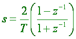
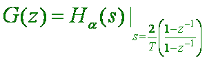
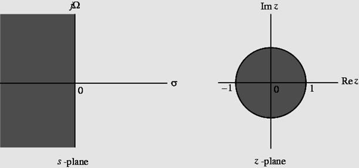
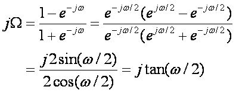
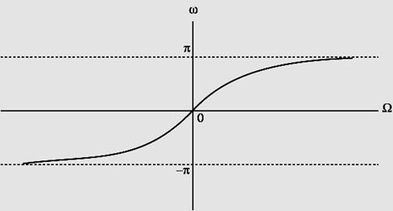
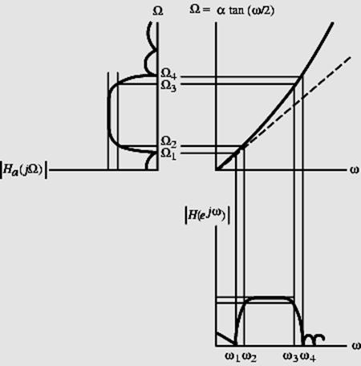
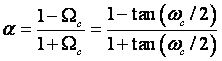
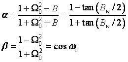
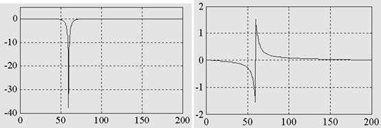
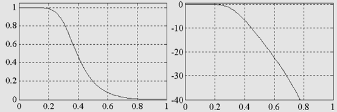

|
§7.4 IIR Digital Filter
Design: Bilinear Transformation Method l
Bilinear transformation  Above transformation maps a
single point in the s-plane to a unique point in the z-plane and vice-versa l
Relation between G(z) and Ha(s) is then given by  l
Digital filter design consists of 3 steps: (1) Develop the specifications of Ha(s)
by applying the inverse bilinear transformation to specifications of G(z) (2) Design Ha(s) (3) Determine G(z) by applying bilinear transformation to Ha(s)
l
As a result, the parameter T has no effect on G(z)
and T = 2 is chosen for convenience l
Mapping of s-plane into the z-plane  l
For z=ejw with T = 2 we have  or W=tan(w/2)  l
Mapping is highly nonlinear
l
Complete negative imaginary axis in the s-plane from W= - ￥ to W=0 is mapped into the lower half of the
unit circle in the z-plane from
z = -1 to z = 1
l
Complete positive imaginary axis in the s-plane from W=0 to W= ￥
is mapped into the upper half of the unit circle in the z-plane
from z = 1 to z = - 1 l
Nonlinear mapping introduces a distortion in the frequency axis
called frequency warping l
Effect of warping shown below  l
Steps in the design of a digital filter - (1) Prewarp (wp, ws) to find their analog
equivalents (Wp, Ws) (2) Design the analog filter Ha(s) (3) Design the digital filter G(z) by
applying bilinear transformation to Ha(s) l
Transformation can be used only to design digital filters with
prescribed magnitude response with piecewise constant values l
Transformation does not preserve phase response of analog filter l
Example - Consider
Applying bilinear
transformation to the above we get the transfer function of a first-order
digital lowpass Butterworth filter
l
Rearranging terms we get
where
 l
Example - Consider the second-order analog notch transfer function for which |Ha(jW0)| = 0, |Ha(j0)| = |Ha(j￥)| = 0 l
W0 is called the notch frequency l
if , then B=W2 - W1 is the 3-dB notch bandwidth l
Then Where  l
Example - Design a 2nd-order digital notch filter operating at a sampling
rate of 400 Hz with a notch frequency at 60 Hz, 3-dB notch bandwidth of 6 Hz l
Thus w0 = 2p(60/400) = 0.3 p Bw = 2p(6/400) = 0.03 p l
From the above values we get a = 0.90993 b = 0.587785 l
Thus The
gain and phase responses are shown below:  l
Example - Design a lowpass Butterworth digital filter with wp =0.25p, ws = 0.55p, ap￡0.5 dB, and as315 dB l
Thus e2=0.1220185, A2=31.622777 l
If |G(ej0)|=0 this implies 20log10|G(ej0.25p)| 3-0.5 20log10|G(ej0.55p)| ￡-15 l
Prewarping we get Wp=tan(wp/2)=tan(0.25p/2)=0.4142136 Ws =tan(ws/2)=tan(0.55p/2)=1.1708496 The inverse transition ratio is 1/k = Ws/ Wp = 2.8266809 The inverse discrimination
ratio is 1/k1 = = 15.841979 l
Thus N=log10(1/k1)/
log10(1/k) =2.6586997 l
Choose N=3 l
To determine Wc we use |Ha(jWp)|2= 1/[1+(Wp/ Wc)2N]=1/(1+e2) l
We then get Wc= 1.419915(Wp)=0.588148 l
3rd-order lowpass Butterworth transfer function for Wc=1 is Han(s)=1/[(s+1)(s2+s+1)] l
Denormalizing to get Wc=0.588148 we arrive at
Ha(s)= Han(s/0.588148) l
Applying bilinear transformation to Ha(s) we get the
desired digital transfer function Magnitude and gain responses of
G(z) shown below:  |